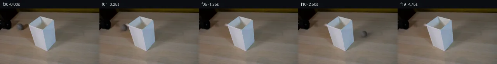

![首帧]()

Round 00
2026-11-05T16:20:07.235491+00:00像素候选变化代码 +138/−0inspection 更新
pixels 50a33246b7c8d0de · code 50febedab6d4f768
查看本轮 generate.py 真实 diff
--- previous/generate.py
+++ current/generate.py
@@ -0,0 +1,138 @@
+"""Deterministic, local photograph/pixel-based continuation. No learned model."""
+from pathlib import Path
+import json
+import numpy as np
+from PIL import Image, ImageDraw, ImageFilter
+from scipy.ndimage import gaussian_filter, map_coordinates
+import cv2
+from artifact_io import save
+
+ROOT = Path(__file__).resolve().parent
+S = 4
+H, W = 144, 256
+source = np.asarray(Image.open(ROOT/'first_frame.png').convert('RGB'))
+
+# Remove only the original ball and its northeast-going shadow. Local inpainting
+# supplies wood colors; the untouched photograph supplies all other scene pixels.
+erase = Image.new('L',(W,H),0)
+d = ImageDraw.Draw(erase)
+d.ellipse((40,37,62,58),fill=255)
+d.polygon([(51,42),(68,34),(73,34),(73,46),(60,57),(47,55)],fill=255)
+mask = np.asarray(erase)
+repaired = cv2.inpaint(source, mask, 4, cv2.INPAINT_TELEA)
+# Blend the perimeter of the repair, keeping its interior fully reconstructed.
+a = np.asarray(erase.filter(ImageFilter.GaussianBlur(.6)),dtype=float)/255
+blend = np.maximum(a,mask.astype(float)/255)
+background = np.rint(source*(1-blend[...,None])+repaired*blend[...,None]).astype(np.uint8)
+
+# Exact foreground visibility mask, supersampled for the photographed shade edges.
+shade_im = Image.new('L',(W*S,H*S),0)
+shade_pts = [(73.7,42.5),(103.7,20.2),(138.2,28.4),
+ (143.6,83.7),(119.8,110.6),(89.1,97.3)]
+ImageDraw.Draw(shade_im).polygon([(round(x*S),round(y*S)) for x,y in shade_pts],fill=255)
+shade_hi = np.asarray(shade_im,dtype=float)/255
+shade = np.asarray(shade_im.resize((W,H),Image.Resampling.LANCZOS),dtype=float)/255
+# Protect all shade pixels from the small background repair too.
+background = np.rint(background*(1-shade[...,None])+source*shade[...,None]).astype(np.uint8)
+Image.fromarray(background).save(ROOT/'.tmp/background.png')
+
+# Fit the low-frequency sphere illumination directly to the visible initial ball.
+# The normal-space fit keeps illumination fixed while material/seam rotation changes.
+cx0, cy0, radius = 51.0, 47.5, 8.45
+yy,xx = np.mgrid[0:H,0:W]
+u=(xx-cx0)/radius
+v=(yy-cy0)/radius
+rr=u*u+v*v
+z=np.sqrt(np.maximum(0,1-rr))
+fitmask=rr<.75
+B=np.stack([np.ones_like(u),u,v,z,u*v,u*u-v*v],axis=-1)
+coeff=np.linalg.lstsq(B[fitmask],source[fitmask].astype(float),rcond=None)[0]
+# Low contrast textile variation is deterministic and rotates on the sphere.
+rng=np.random.default_rng(147)
+noise=rng.normal(size=(128,256))
+noise=gaussian_filter(noise,.75,mode='wrap')
+noise=noise/(np.std(noise)+1e-8)
+
+Y,X=np.mgrid[0:H*S,0:W*S]
+X=(X+.5)/S-.5
+Y=(Y+.5)/S-.5
+
+def axis_rotation(axis,angle):
+ axis=np.asarray(axis,dtype=float);axis/=np.linalg.norm(axis)
+ x,y,z=axis
+ K=np.array([[0,-z,y],[z,0,-x],[-y,x,0]])
+ return np.eye(3)*np.cos(angle)+(1-np.cos(angle))*np.outer(axis,axis)+np.sin(angle)*K
+
+# A fixed initial material orientation provides an oblique, subtle tennis seam.
+material0=axis_rotation([0,0,1],-.70)@axis_rotation([1,0,0],.47)
+
+def moving_layer(cx,cy,travel):
+ dx=(X-cx)/radius;dy=(Y-cy)/radius
+ q=dx*dx+dy*dy
+ nz=np.sqrt(np.maximum(0,1-q))
+ normals=np.stack([dx,dy,nz],axis=-1)
+ illumination=np.stack([np.ones_like(dx),dx,dy,nz,dx*dy,dx*dx-dy*dy],axis=-1)@coeff
+ # Clamp the fit at silhouette extremes to prevent dark extrapolation.
+ illumination=np.clip(illumination,38,120)
+ body=normals@(axis_rotation([-.155,1,.16],travel/radius)@material0)
+ lon=(np.arctan2(body[...,2],body[...,0])/(2*np.pi)+.5)*256
+ lat=(np.arccos(np.clip(body[...,1],-1,1))/np.pi)*127
+ felt=map_coordinates(noise,[lat,lon],order=1,mode='wrap')
+ # Closed wavy seam on a spherical grey tennis ball, softened by felt.
+ curve=body[...,2]-.36*(2*body[...,0]**2-1)
+ seam=np.exp(-.5*(curve/.035)**2)
+ color=illumination+felt[...,None]*.85+seam[...,None]*5.0
+ coverage=np.clip((1-np.sqrt(q))*radius*S+.5,0,1)
+ # Blurred edges and ~1 pixel exposure smear retain the original soft optics.
+ alpha=gaussian_filter(coverage,(.55*S,.70*S))
… diff truncated; 51 more lines …